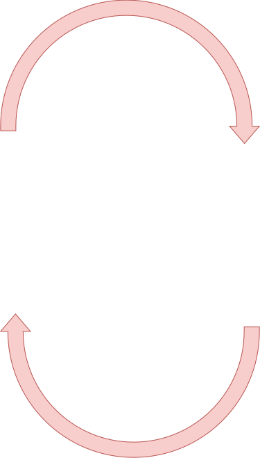
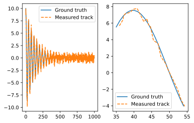
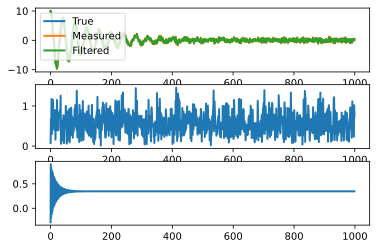
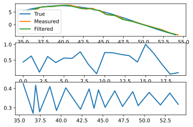
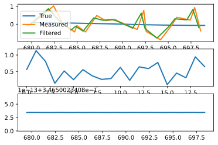

Kalman Filters and Linear Systems
Jacky Baltes
National Taiwan Normal University
Taipei, Taiwan
jacky.baltes@ntnu.edu.tw

Linear Systems
- A linear transformation can be modelled by matrix multiplication
- State transition/process model \[ x_{t} = A x_{t-1} + w_{t-1} \\ A = \left[ \begin{array}{cc}A_x & 0\\0 & A_y\\ \end{array}\right] \\ w_{t-1} = \mbox{Process noise covariance matrix} \]
- Measurement model \[ \hat{z}_{t+1} = H \hat{x}_t + v_{t} \\ H = \left[ \begin{array}{cc}H_x & 0\\0 & H_y\\ \end{array}\right] \\ \hat{v}_{t} = \mbox{Measurement noise covariance matrix} \]
Initialization
-
\[
A = \left[ \begin{array}{cc}1 & 0\\0 & 1\\ \end{array}\right] \\
\]
- Process noise covariance \[ Q = E\{w \cdot w^T\} = \left[\begin{array}{cc}Q_{xx} & 0\\0 & Q_{yy}\\ \end{array}\right] \\ \]
- Measurement noise covariance \[ R = E\{v \cdot v^T\} = \left[\begin{array}{cc}R_{xx} & 0\\0 & R_{yy}\\ \end{array}\right] \\ \]
First Step
- Position estimate \[ \bar{x}_{0} = H \bar{z}_{0} \]
- Noise estimate \[ P_{0} = \left[\begin{array}{cc} \epsilon & 0\\0 & \epsilon\\ \end{array}\right] \\ \]
Predict
- \( ?^{-}_{k} \) indicates output of the predict step at time \( k \)
- New state estimate \[ \bar{x}^{-}_{k} = A \bar{x}_{k-1} \\ \]
- Noise estimate \[ P^{-}_{k} = A P_{k-1} A^T + Q\\ \]
Correct
- \( ?_{k} \) indicates output of the correct step at time \( k \)
- New state estimate \[ \bar{x}_{k} = \bar{x}^{-}_{k} + K( H \bar{z}_{k} - \bar{x}^{-}_{k} ) \\ \]
- New noise estimate \[ P_{k} = (I-KH) P^{-}_{k}\\ \]
- Kalman Gain \[ K = \frac{P^{-}_{k} H^{T}}{HP^{-}_{k}H^{T} + R}\\ \]
Iterate
| Predict | Correct |
| \[ \bar{x}^{-}_{k} = A \bar{x}_{k-1} \\ P^{-}_{k} = A P_{k-1} A^T + Q\\ \] | \[ \bar{x}_{k} = \bar{x}^{-}_{k} + K( H \bar{z}_{k} - \bar{x}^{-}_{k} ) \\ P_{k} = (I-KH) P^{-}_{k}\\ K = P^{-}_{k} H^{T} (HP^{-}_{k}H^{T} + R)^{-1}\\ \] |

A = np.array( [ [ 1, 0 ], [0, 1] ] )
# w = 0.5
# w_cov = np.array( [ [ 0.5, 0], [0, 0.3] ] )
Q = np.array( [ [ 0.5, 0 ], [0, 1.5] ] )
x_start = np.array( [0, 0] )
H = np.array( [ [ 1.0, 0 ], [ 0, 1.0 ] ] )
R = np.array( [ [ 0.25, 0 ], [0, 0.25] ] )
N_POINTS = 1000
xt = np.arange(N_POINTS)
yt = np.zeros( len(xt) )
ds = np.zeros( (2, len(xt) ) )
current = x_start
for i in range(N_POINTS):
ampl = 10 * 0.9 ** (i/15)
y = ampl * math.cos(i/N_POINTS * (25*2.0*math.pi) )
yt[i] = y
ds[0,:] = xt
ds[1,:] = yt
ds = ds + np.random.multivariate_normal( [0,0], R, len(ds[0])).T
fig = plt.figure( dpi=300)
ax1 = fig.add_subplot(1,2,1)
ax1.plot( xt, yt, '-', label='Ground truth' )
ax1.plot( ds[0], ds[1], '--', label="Measured track")
ax1.legend()
START=35
STOP=START+20
ax2 = fig.add_subplot(1,2,2)
ax2.plot( xt[START:STOP], yt[START:STOP], '-', label='Ground truth' )
ax2.plot( ds[0,START:STOP], ds[1,START:STOP], '--', label="Measured track")
ax2.legend()
d1 = addJBFigure("d1", 0, 0, fig )
plt.close()
Sample Problem

# Predict step
def predict( x, P, A, Q ):
x_minus = A.dot( x )
P_minus = A.dot(P).dot(A.T) +Ｑ
return x_minus, P_minus
# Correct
def correct( z, x_minus, P_minus, H, R ):
di = np.linalg.inv( H.dot(P_minus).dot(H.T) + R)
K = P_minus.dot(H.T).dot(di)
x = x_minus + K.dot( H.dot(z) - x_minus )
P = np.eye(len(P_minus)) - K.dot( H ).dot(P_minus)
return x,P
x = np.array( [ 0, 10 ] )
P = np.array( [ [1, 0], [0, 1] ] )
for i in range(10):
x_minus, P_minus = predict( x, P, A, Q)
x, P = correct( [ ds[0,i], ds[1,i] ], x_minus, P_minus, H, R )
print( f'Step {i} {x} {P}, {x_minus}, {P_minus}' )
Step 0 [-0.07535912 9.98001485] [[-0.28571429 0. ] [ 0. -1.27272727]], [ 0 10], [[1.5 0. ] [0. 2.5]] Step 1 [0.52100363 9.33407133] [[0.9010989 0. ] [0. 0.89177489]], [-0.07535912 9.98001485], [[0.21428571 0. ] [0. 0.22727273]] Step 2 [1.55889547 9.39302024] [[-0.18895248 0. ] [ 0. -1.16543323]], [0.52100363 9.33407133], [[1.4010989 0. ] [0. 2.39177489]] Step 3 [1.92026399 9.19254244] [[0.82755372 0. ] [0. 0.80851644]], [1.55889547 9.39302024], [[0.31104752 0. ] [0. 0.33456677]] Step 4 [4.06768106 8.15378338] [[-0.11717202 0. ] [ 0. -1.08294466]], [1.92026399 9.19254244], [[1.32755372 0. ] [0. 2.30851644]] Step 5 [4.74854114 7.19011711] [[0.768409 0. ] [0. 0.73924929]], [4.06768106 8.15378338], [[0.38282798 0. ] [0. 0.41705534]] Step 6 [5.81168341 5.21071105] [[-0.05957051 0. ] [ 0. -1.01435726]], [4.74854114 7.19011711], [[1.268409 0. ] [0. 2.23924929]] Step 7 [7.37525994 4.64743707] [[0.71904714 0. ] [0. 0.67939754]], [5.81168341 5.21071105], [[0.44042949 0. ] [0. 0.48564274]] Step 8 [6.92711805 3.33378942] [[-0.01159173 0. ] [ 0. -0.95512408]], [7.37525994 4.64743707], [[1.21904714 0. ] [0. 2.17939754]] Step 9 [8.30593052 1.5916902 ] [[0.67695021 0. ] [0. 0.62649546]], [6.92711805 3.33378942], [[0.48840827 0. ] [0. 0.54487592]]
import matplotlib.pyplot as plt
import numpy as np
import math
import random
fig = plt.figure( dpi=300)
data = []
x = np.array( [ 0, 10 ] )
P = np.array( [ [1, 0], [0, 1] ] )
N_POINTS = 1000
xs = np.zeros(N_POINTS)
ys = np.zeros(N_POINTS)
ps = np.zeros(N_POINTS)
for i in range(N_POINTS):
x_minus, P_minus = predict( x, P, A, Q)
x, P = correct( [ ds[0,i], ds[1,i] ], x_minus, P_minus, H, R )
xs[i] = x[0]
ys[i] = x[1]
ps[i] = P[0,0]
ax1 = fig.add_subplot(3,1,1)
ax1.plot( xt[0:N_POINTS], yt[0:N_POINTS], linewidth=2, label="True")
ax1.plot( ds[0,0:N_POINTS], ds[1,0:N_POINTS], linewidth=2, label="Measured")
ax1.plot( xs, ys, linewidth=2, label="Filtered")
ax1.legend()
ax2 = fig.add_subplot(3,1,2 )
ax2.plot( np.sqrt((xs-xt[0:N_POINTS])**2 + (ys-yt[0:N_POINTS])**2), linewidth=2 )
ax3 = fig.add_subplot(3,1,3)
ax3.plot( xs, ps, linewidth=2)
kf1 = addJBFigure("kf1", 0, 0, fig )
plt.close()
Kalman Filter Example

START=35
STOP=START+20
fig = plt.figure( dpi=300)
ax1 = fig.add_subplot(3,1,1)
ax1.plot( xt[START:STOP], yt[START:STOP], linewidth=2, label="True")
ax1.plot( ds[0,START:STOP], ds[1,START:STOP], linewidth=2, label="Measured")
ax1.plot( xs[START:STOP], ys[START:STOP], linewidth=2, label="Filtered")
ax1.legend()
ax2 = fig.add_subplot(3,1,2 )
ax2.plot( np.sqrt((xs[START:STOP]-xt[START:STOP])**2 + (ys[START:STOP]-yt[START:STOP])**2), linewidth=2 )
ax3 = fig.add_subplot(3,1,3)
ax3.plot( xs[START:STOP], ps[START:STOP], linewidth=2)
kf2 = addJBFigure("kf2", 0, 0, fig )
plt.close()
START=680
STOP=START+20
fig = plt.figure( dpi=300)
ax1 = fig.add_subplot(3,1,1)
ax1.plot( xt[START:STOP], yt[START:STOP], linewidth=2, label="True")
ax1.plot( ds[0,START:STOP], ds[1,START:STOP], linewidth=2, label="Measured")
ax1.plot( xs[START:STOP], ys[START:STOP], linewidth=2, label="Filtered")
ax1.legend()
ax2 = fig.add_subplot(3,1,2 )
ax2.plot( np.sqrt((xs[START:STOP]-xt[START:STOP])**2 + (ys[START:STOP]-yt[START:STOP])**2), linewidth=2 )
ax3 = fig.add_subplot(3,1,3)
ax3.plot( xs[START:STOP], ps[START:STOP], linewidth=2)
kf3 = addJBFigure("kf3", 0, 0, fig )
plt.close()
Kalman Filter Example
|  |  |